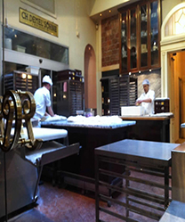

About Doughnut Delights
Doughnut Delights was started in 1971 by Melvin Furballski, an immigrant baker from the far east coast of Poland. Known far and wide for his delicate pastries, Melvin fled his homeland in search of a better life for his family.
In 1970 he landed in New York City and by chance he found an open seat on a bus heading west. When an unexpected mechanical failure forced a three day delay in Champaign, Illinois, Furballski saw the need for a doughnut shop, so he decided to stay and make a new life for himself in Urbana, Illinois.
With only one hundred dollars to his name, he found an abandoned breadshop and within two days he had one of a kind doughnuts flying off the racks faster than he could bake them and things have never slowed down. Now you can find that same great doughnut recipe plus dozens more still being made with the same love and care as when Doughnut Delights first opened.

Social Media